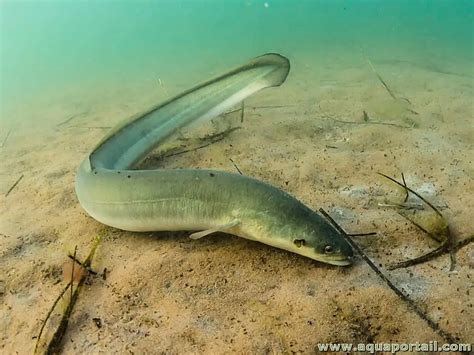

Χέλι(Anguilla anguilla)

Μορφολογία
Το ευρωπαϊκό χέλι έχει επίμηκες, φιδόμορφο σώμα χωρίς ξεκάθαρη ουραία γωνία, μικρά πτερύγια και παχιά βλεννώδη επιδερμίδα, χαρακτηριστική για είδη που ζουν κοντά στον βυθό και εισχωρούν σε λάσπη ή σχισμές. Τα ενήλικα φτάνουν συνήθως 40–80 cm, αλλά μπορούν να ξεπεράσουν το 1 m, με μήκος σώματος πολύ μεγαλύτερο από το ύψος του και ραχιαίο–ουραίο–εδρικό πτερύγιο που σχηματίζει σχεδόν συνεχές «πλαίσιο» γύρω από το πίσω μέρος του σώματος.
Πού το συναντάμε
Το ευρωπαϊκό χέλι έχει κατανομή σε ποτάμια, λίμνες, λιμνοθάλασσες και παράκτια νερά σε όλη σχεδόν την Ευρώπη και τη Μεσόγειο, περιλαμβανομένης της Ελλάδας, αλλά αναπαράγεται μακριά, στο Σαρκασσό πέλαγος του Ατλαντικού. Προτιμά γλυκά και υφάλμυρα νερά με ήπια ροή, πλούσιο βυθό (λάσπη, φυτά, πέτρες) και θερμοκρασίες περίπου 10–25 °C, αλλά μπορεί να αντέξει ευρύ φάσμα (περίπου 0–30 °C) και να κινείται από ποτάμια σε θάλασσα στη διάρκεια του κύκλου ζωής του.
Διατροφή
Το χέλι είναι νυκτόβιο και παμφάγο αρπακτικό, που τρέφεται κυρίως με βενθικά ασπόνδυλα όπως σκουλήκια, καρκινοειδή, μαλάκια και προνύμφες εντόμων, αλλά καταναλώνει επίσης μικρά ψάρια και νεκρή οργανική ύλη όταν είναι διαθέσιμη. Η διατροφή του αλλάζει ανάλογα με το μέγεθος και το περιβάλλον (λίμνη, εκβολή, λιμνοθάλασσα), κάτι που το κάνει ιδιαίτερα ευέλικτο και σημαντικό κρίκο στα υδρόβια οικοσυστήματα.
Συνθήκες εκτροφής
Στην ιχθυοκαλλιέργεια, το ευρωπαϊκό χέλι εκτρέφεται κυρίως σε δεξαμενές γλυκού ή υφάλμυρου νερού με ελεγχόμενη θερμοκρασία περίπου 20–24 °C, καλή οξυγόνωση και βιοφίλτρα που κρατούν σταθερή ποιότητα νερού. Χρησιμοποιούνται συνήθως συστήματα ανακυκλοφορίας (RAS) με κρυψώνες ή σωλήνες στον πυθμένα, χαμηλό φωτισμό και ήπια ροή, ώστε τα χέλια να αισθάνονται ασφαλή και να τρέφονται κανονικά με πλούσιες σε πρωτεΐνη βιομηχανικές τροφές.